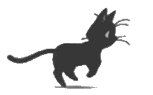

Artifact preview only — the real widget sits directly on your desktop
📌
Pinboard
from Telegram, via Notion
2m ago
◆
Session moved to Monday 7–9pm
Mon, Aug 31
·
7:00 PM
Book Club
✓
Fill out sign-up form
Due Sun, Aug 30
Book Club
◆
Yoga intro class
Mon, Aug 31
Fitness Group
!
Package left at front desk
Today
Community Group
✓
Volunteer recruitment — sign up
Due Fri, Sep 11
Community Group
